Kubernetes + EKS + Blue/Green Deployment
- Create a simple node site
- Create an docker image and host it on ECR
- Create and host 3 different versions
- Use Terraform to create the EKS cluster
- Publish
version 1.0.0toversion 1.2.0using the Blue/Green Deployment pattern
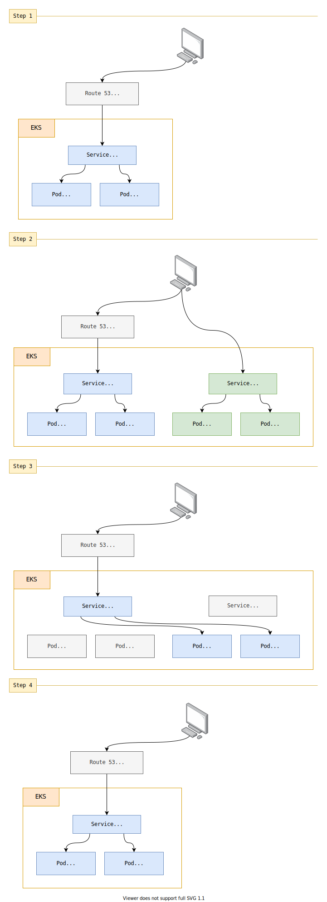
Install and setup the project
Get the code from this github repository :
# download the code
$ git clone \
--depth 1 \
https://github.com/jeromedecoster/eks-blue-green.git \
/tmp/aws
# cd
$ cd /tmp/aws
To setup the project, run the following command :
# npm install + terraform init + create ecr repository
$ make setup
This command will :
An .ecr file contains the address of the docker repository. It is based on the .ecr.tmpl template.
The repository is created :
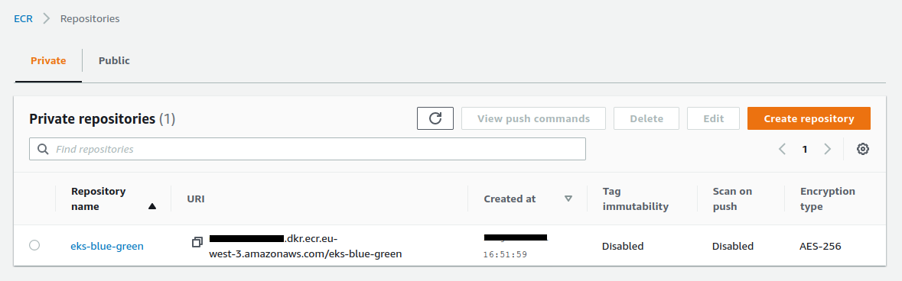
The repository is empty :
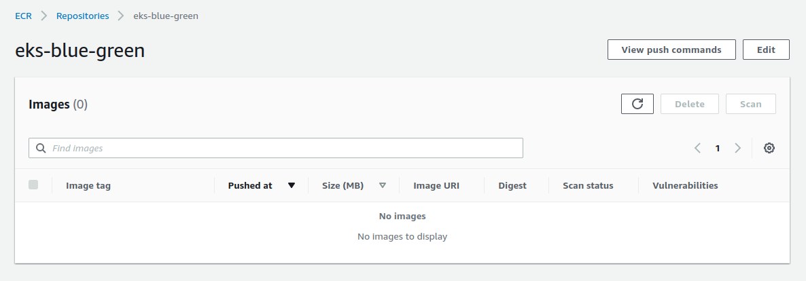
Running the different versions of the website
Let’s run the website locally :
# run the website locally — 1.0.0 version — blue parrot
$ make local-1.0.0
This command runs this script :
$ WEBSITE_TITLE='Blue Parrot' \
WEBSITE_IMAGE='parrot-1.jpg' \
WEBSITE_VERSION=1.0.0 \
node .
By opening the address http://localhost:3000 we can see the website :
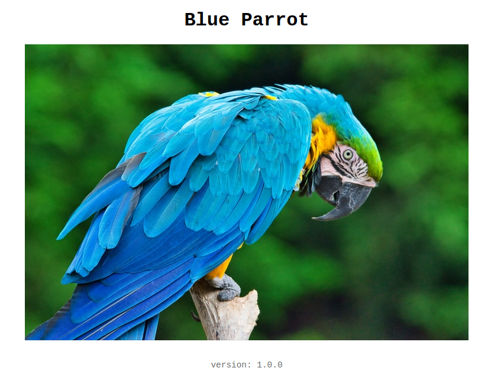
This is a simple node server :
const app = express()
// ...
app.set('view engine', 'njk')
app.use(express.static('public'))
app.locals.title = process.env.WEBSITE_TITLE || 'Parrot'
app.locals.image = process.env.WEBSITE_IMAGE || 'parrot-1.jpg'
app.locals.version = process.env.WEBSITE_VERSION || require('./package.json').version
app.get('/', async (req, res) => {
res.render('index')
})
Displaying a simple HTML page :
<body>
<h1>{{ title }}</h1>
<img src="img/{{ image }}" alt="A Parrot">
<footer>version: {{ version }}</footer>
</body>
We can see the site in version 1.1.0 by executing this command :
# run the website 1.1.0 version — green parrot
$ make local-1.1.0
To switch from one version to another, we only change a few environment variables :
$ WEBSITE_TITLE='Green Parrot' \
WEBSITE_IMAGE='parrot-2.jpg' \
WEBSITE_VERSION=1.1.0 \
node .
By reloading the website we can see :
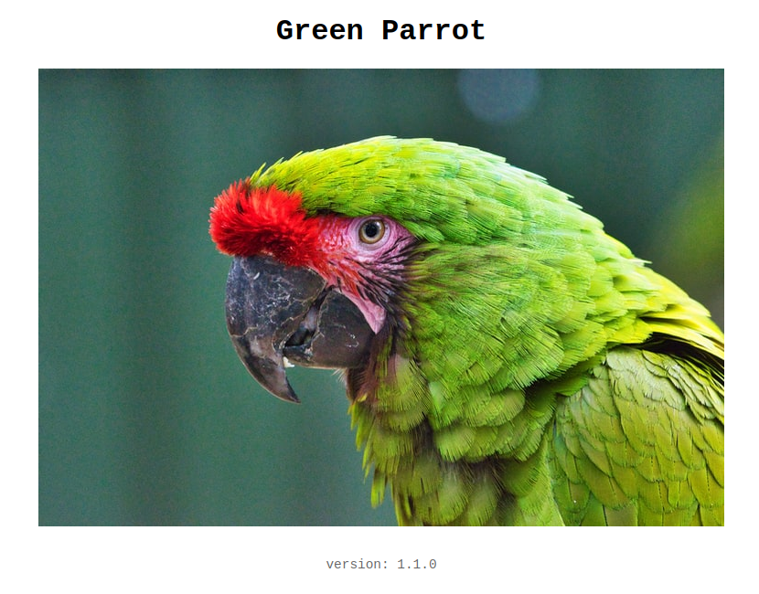
And to see version 1.2.0 of the site :
# run the website 1.2.0 version — blue parrot
$ make local-1.2.0
This command runs this script :
$ WEBSITE_TITLE='Red Parrot' \
WEBSITE_IMAGE='parrot-3.jpg' \
WEBSITE_VERSION=1.2.0 \
node .
By reloading the website we can see :
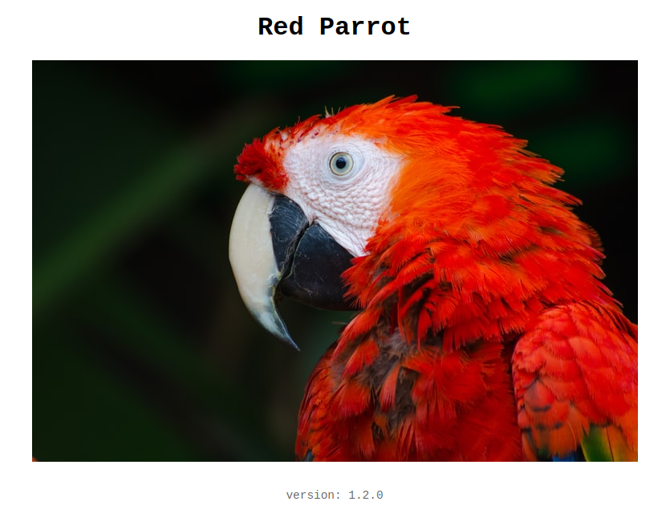
Building and push the Docker images
We will now create the 3 docker images with this command:
# build all 1.x.0 versions
$ make build-all
This command executes 3 commands docker image build
To build a specific version, we change information via the option --build-arg :
$ docker image build \
--build-arg TITLE='Green Parrot' \
--build-arg IMAGE='parrot-2.jpg' \
--build-arg VERSION='1.1.0' \
--tag eks-blue-green:1.1.0 \
.
Here is the Dockerfile :
# ...
FROM node:16.3-slim
ENV NODE_ENV production
ARG TITLE='Blue Parrot'
ARG IMAGE='parrot-1.jpg'
ARG VERSION='1.0.0'
ENV WEBSITE_TITLE $TITLE
ENV WEBSITE_IMAGE $IMAGE
ENV WEBSITE_VERSION $VERSION
WORKDIR /app
COPY --from=build /app .
ADD . .
EXPOSE 3000
CMD ["node", "server.js"]
We can now push our 3 images on ECR :
# push all 1.x.0 versions to ecr
$ make push-all
After several minutes, the repository contains now the 3 images :
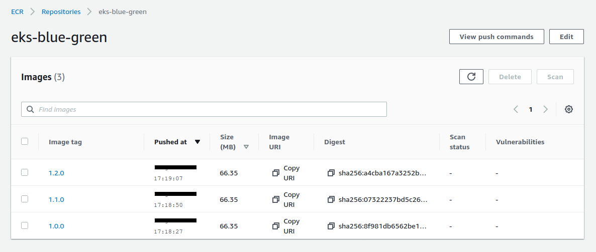
Creating the EKS cluster
Creating an EKS cluster using Terraform is much more complicated than with eksctl.
We can find excellent tutorials that no longer work after a few months because the evolution of various components makes the script incompatible.
We often find obsolete templates because they use old versions of these excellent modules.
And trying to update a project that you are not the author of is often an unpleasant experience.
My favorite reference template to create an EKS cluster can be found on the HashiCorp tutorial.
This is the template that is used in this project :
We start by validating the project :
# terraform validate
$ make tf-validate
This command runs this script :
$ terraform fmt -recursive
$ terraform validate
We now launch the creation of the cluster :
# terraform plan + terraform apply
$ make tf-apply
This command runs this script :
$ terraform plan
$ terraform apply -auto-approve
We launch the creation of the EKS cluster. You have to be patient because it takes about 15 minutes !
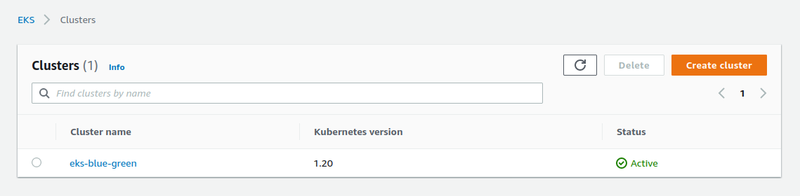
For now, we cannot use kubectl because it is not yet configured :
$ kubectl get ns
Unable to connect to the server ...
To configure kubectl we run this command :
$ make kube-config
This command runs this script :
$ aws eks update-kubeconfig \
--name $(terraform output -raw cluster_name) \
--region $(terraform output -raw region)
We check the configuration, it works :
$ kubectl config current-context
arn:aws:eks:eu-west-3:xxxxx:cluster/eks-blue-green
We can now correctly list the namespaces :
$ kubectl get ns
NAME STATUS AGE
default Active 10m
kube-node-lease Active 10m
kube-public Active 10m
kube-system Active 10m
Publish the version 1.0.0
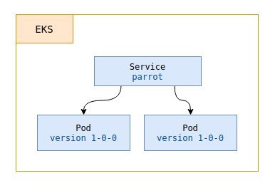
To upload our first version we run this command :
# publish the 1.0.0 version
$ make k8s-1.0.0
To be able to see its effects, we can display in a new terminal window always visible :
$ watch kubectl get all --namespace eks-blue-green
Let’s detail these steps…
We use these templates. We create a namespace :
$ kubectl apply --filename namespace.yaml
By using this simple template :
apiVersion: v1
kind: Namespace
metadata:
name: eks-blue-green
We now create a deployment using the deployment.yaml file :
apiVersion: apps/v1
kind: Deployment
metadata:
name: parrot-${LABEL_VERSION}
namespace: eks-blue-green
spec:
replicas: 2
selector:
matchLabels:
app: parrot
version: ${LABEL_VERSION}
template:
metadata:
labels:
app: parrot
version: ${LABEL_VERSION}
spec:
containers:
- name: parrot
image: ${DOCKER_IMAGE}
ports:
- containerPort: 3000
This file is a template, we use envsubst to substitute the variables :
$ export DOCKER_IMAGE=xxxxx.dkr.ecr.eu-west-3.amazonaws.com/eks-blue-green:1.0.0
$ export LABEL_VERSION=1-0-0
# show the result
$ envsubst < deployment.yaml
# pipe the output to apply directly
$ envsubst < deployment.yaml | kubectl apply --filename -
We now create a service using the service.yaml file :
apiVersion: v1
kind: Service
metadata:
name: parrot
namespace: eks-blue-green
spec:
ports:
- port: 80
targetPort: 3000
protocol: TCP
name: http
selector:
app: parrot
version: ${LABEL_VERSION}
type: LoadBalancer
This creates an Load Balancer that points to the pods defined by the selector version: 1-0-0 :
$ export LABEL_VERSION=1-0-0
# pipe the output to apply directly
$ envsubst < service.yaml | kubectl apply --filename -
And after a few minutes we can see our site online :
In our frequently updated terminal window we can see our resources :
NAME READY STATUS RESTARTS AGE
pod/parrot-1-0-0-68dc7cc6fb-knpq4 1/1 Running 0 100s
pod/parrot-1-0-0-68dc7cc6fb-m24cj 1/1 Running 0 100s
NAME TYPE CLUSTER-IP EXTERNAL-IP PORT(S) AGE
service/parrot LoadBalancer 172.20.62.57 a6dexxx-xxx.eu-west-3.elb.amazonaws.com 80:31932/TCP 100s
NAME READY UP-TO-DATE AVAILABLE AGE
deployment.apps/parrot-1-0-0 2/2 2 2 100s
NAME DESIRED CURRENT READY AGE
replicaset.apps/parrot-1-0-0-68dc7cc6fb 2 2 2 100s
Subdomain management with Route 53
I create a new record associated with my domain name :
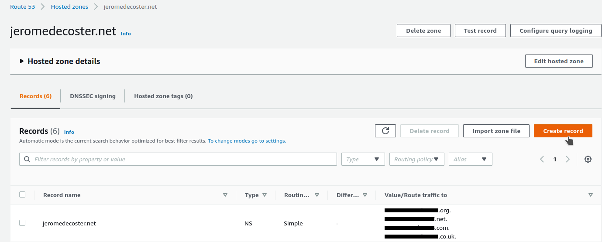
I add the parrot subdomain :
- I create a
type Arecord - I activate
Alias - I select my region then my Load Balancer
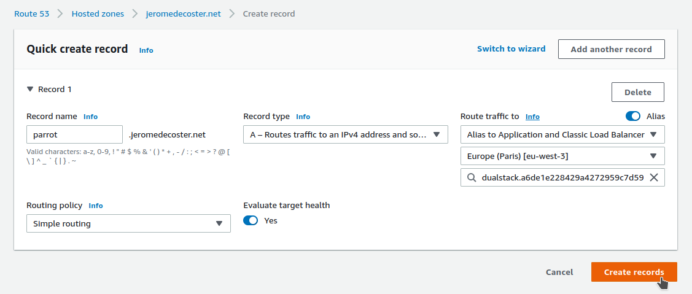
And when I open parrot.jeromedecoster.net :
Publish the version 1.1.0 as green
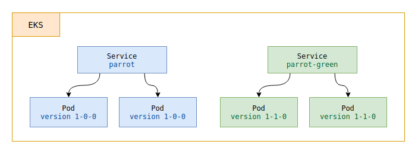
We will now publish our version 1.1.0 in the « green space » :
$ make k8s-1.1.0-green
We create a new deployment by using the same file but changing the environment variables :
$ export DOCKER_IMAGE=xxxxx.dkr.ecr.eu-west-3.amazonaws.com/eks-blue-green:1.1.0
$ export LABEL_VERSION=1-1-0
$ envsubst < deployment.yaml | kubectl apply --filename -
And to set up a new service (a new Load Balancer) we use a new template service-green.yaml :
The only thing that changes in this template is the name used to reference the service, name: parrot-green instead of name: parrot :
apiVersion: v1
kind: Service
metadata:
name: parrot-green # name modified
namespace: eks-blue-green
spec:
ports:
- port: 80
targetPort: 3000
protocol: TCP
name: http
selector:
app: parrot
version: ${LABEL_VERSION}
type: LoadBalancer
This creates a load balancer that points to the pods defined by the selector version: 1-1-0 :
$ export LABEL_VERSION=1-1-0
# pipe the output to apply directly
$ envsubst < service-green.yaml | kubectl apply --filename -
This command creates a second Load Balancer and after a few seconds we can see our site online :
In our frequently updated terminal window we can see our resources :
NAME READY STATUS RESTARTS AGE
pod/parrot-1-0-0-68dc7cc6fb-knpq4 1/1 Running 0 10m
pod/parrot-1-0-0-68dc7cc6fb-m24cj 1/1 Running 0 10m
pod/parrot-1-1-0-54b9d98bf6-2hh85 1/1 Running 0 8s
pod/parrot-1-1-0-54b9d98bf6-vndj2 1/1 Running 0 8s
NAME TYPE CLUSTER-IP EXTERNAL-IP PORT(S) AGE
service/parrot LoadBalancer 172.20.62.57 a6dexxxx.eu-west-3.elb.amazonaws.com 80:31932/TCP 10m
service/parrot-green LoadBalancer 172.20.198.50 a766xxxx.eu-west-3.elb.amazonaws.com 80:32033/TCP 8s
NAME READY UP-TO-DATE AVAILABLE AGE
deployment.apps/parrot-1-0-0 2/2 2 2 10m
deployment.apps/parrot-1-1-0 2/2 2 2 8s
NAME DESIRED CURRENT READY AGE
replicaset.apps/parrot-1-0-0-68dc7cc6fb 2 2 2 10m
replicaset.apps/parrot-1-1-0-54b9d98bf6 2 2 2 8s
Target the 1.1.0 version — new blue
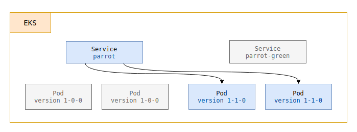
After verifying that our 1.1.0 website is working correctly online, we want to switch :
# targets the 1.1.0 version — new blue
$ make k8s-1.1.0
We just need to target our service name: parrot on the pods defined by the version selector: 1-1-0 :
$ export LABEL_VERSION=1-1-0
# `parrot` service target now labeled version 1-1-0
$ envsubst < service.yaml | kubectl apply --filename -
By reloading the page parrot.jeromedecoster.net I now see :
Remove the 1.0.0 version
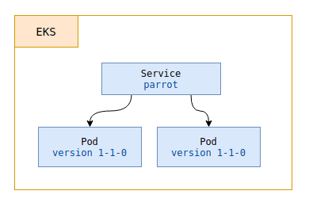
We no longer need our previous version, we can free up our resources.
That means :
- Remove the
parrot-1-0-0deployment - Remove the
parrot-greenservice
We run the following command :
# delete previous blue deployment + green service
$ make k8s-delete-1.0.0
This command runs this script :
# remove parrot-1-0-0 deployment
$ kubectl delete deployments parrot-1-0-0 --namespace eks-blue-green
# remove parrot-green service
$ kubectl delete services parrot-green --namespace eks-blue-green
In our frequently updated terminal window we can see our resources :
NAME READY STATUS RESTARTS AGE
pod/parrot-1-1-0-54b9d98bf6-2hh85 1/1 Running 0 20m
pod/parrot-1-1-0-54b9d98bf6-vndj2 1/1 Running 0 20m
NAME TYPE CLUSTER-IP EXTERNAL-IP PORT(S) AGE
service/parrot LoadBalancer 172.20.62.57 a6dexxxxx.eu-west-3.elb.amazonaws.com 80:31932/TCP 20m
NAME READY UP-TO-DATE AVAILABLE AGE
deployment.apps/parrot-1-1-0 2/2 2 2 20m
NAME DESIRED CURRENT READY AGE
replicaset.apps/parrot-1-1-0-54b9d98bf6 2 2 2 20m
Publish the version 1.2.0 as a new green
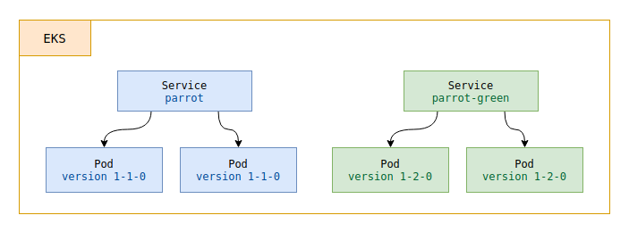
We will now publish our version 1.2.0 in the « green space » :
# publish the 1.2.0 version as green
$ make k8s-1.2.0-green
This command creates a new deployment and a new service :
$ export DOCKER_IMAGE=xxxxx.dkr.ecr.eu-west-3.amazonaws.com/eks-blue-green:1.2.0
$ export LABEL_VERSION=1-2-0
$ envsubst < deployment.yaml | kubectl apply --filename -
# service-green.yaml creates the `parrot-green` service
$ envsubst < service-green.yaml | kubectl apply --filename -
This command creates a new Load Balancer :
NAME READY STATUS RESTARTS AGE
pod/parrot-1-1-0-54b9d98bf6-2hh85 1/1 Running 0 30m
pod/parrot-1-1-0-54b9d98bf6-vndj2 1/1 Running 0 30m
pod/parrot-1-2-0-5c66b966fb-f9ssk 1/1 Running 0 6s
pod/parrot-1-2-0-5c66b966fb-jm6ct 1/1 Running 0 6s
NAME TYPE CLUSTER-IP EXTERNAL-IP PORT(S) AGE
service/parrot LoadBalancer 172.20.62.57 a6dexxxxx.eu-west-3.elb.amazonaws.com 80:31932/TCP 30m
service/parrot-green LoadBalancer 172.20.91.19 a1baxxxxx.eu-west-3.elb.amazonaws.com 80:30358/TCP 6s
NAME READY UP-TO-DATE AVAILABLE AGE
deployment.apps/parrot-1-1-0 2/2 2 2 30m
deployment.apps/parrot-1-2-0 2/2 2 2 6s
NAME DESIRED CURRENT READY AGE
replicaset.apps/parrot-1-1-0-54b9d98bf6 2 2 2 30m
replicaset.apps/parrot-1-2-0-5c66b966fb 2 2 2 6s
After a few minutes we can see our website online via the address of this new Load Balancer :
Target the 1.2.0 version — new blue
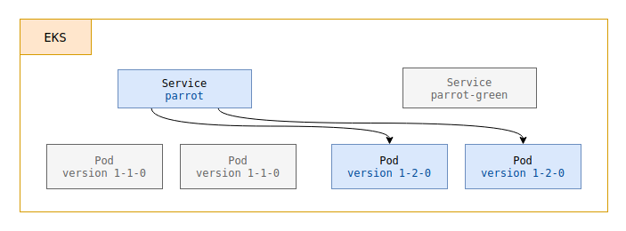
After verifying that our 1.1.0 website is working correctly online, we want to switch :
# target the 1.2.0 version — new blue
$ make k8s-1.2.0
We just need to target our service name: parrot on the pods defined by the version selector: 1-2-0 :
$ export LABEL_VERSION=1-2-0
# `parrot` service target now labeled version 1-2-0
$ envsubst < service.yaml | kubectl apply --filename -
By reloading the page parrot.jeromedecoster.net I now see :
The demonstration is over. We can delete our resources with this command :
# delete eks content + terraform destroy + delete ecr repository
$ make destroy
Warning : deleting resources can take a long time and sometimes fail along the way.
It is important to verify via the AWS website that the resources have indeed disappeared.
In this case, you have to delete them manually, which is not necessarily very easy.